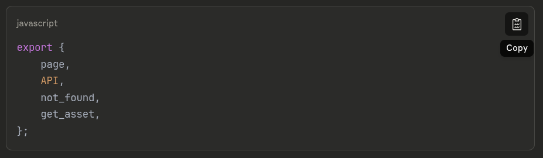
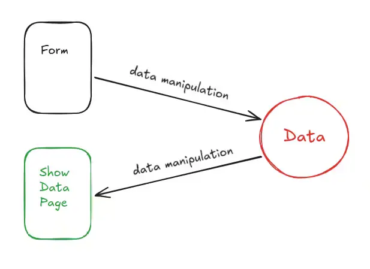
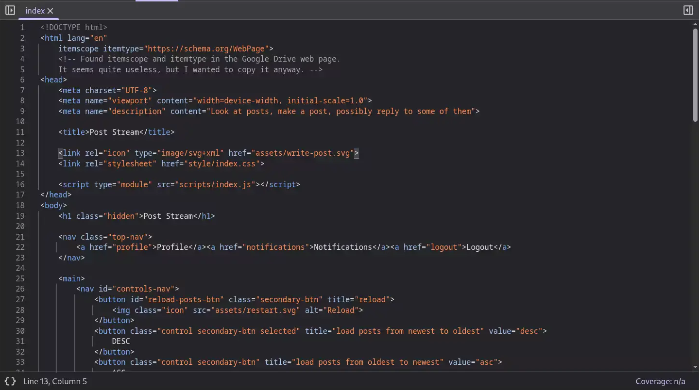
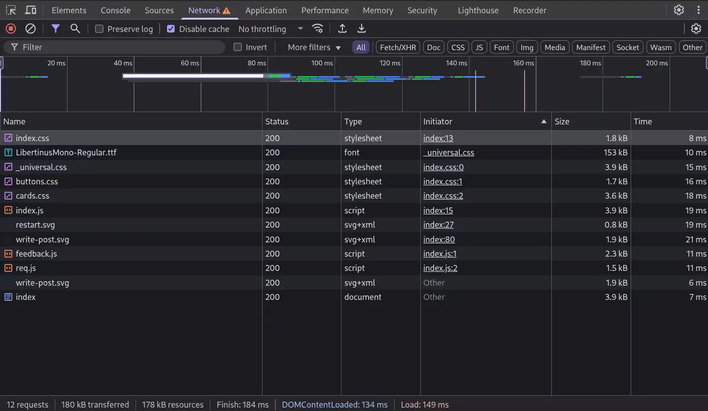

Related to per-component-development:
In general, technology developed by company <x> for their needs, probably doesn't fit your needs.
Another example: take a look at this comment on Carbon:
Carbon Language - Who is it even for?
So, don't go crazy when big company <x> makes some of their internal tools open-source.
Made Postream to see what was possible to make just using the native Web API.
The more I was developing the app, the more I was shifting the rendering towards the server
and then the project moved also to be: "Is developing a server using plain Nodejs practical?"
My conclusion is that it is practical. My fear was that the Nodejs API was too "low level"
in the sense that wasn't giving abstractions to quickly setup a server,
but I didn't encounter this problem.
The fear came by looking at the huge number of dependencies also used on the server-side.
I also think that the limitations of Node are related to the language: JavaScript.
The hackish stuff derive from the nature of js, not Node per se.
So, the conclusive take on Node is that it is suitable to make an app server but,
given the existance of Go, there is no point in using Node.
I find Node useful for network-related scripts like Href-Crawler. That's it.
The Node and Deno environments come from the ideology of using JS
both on the client and on the server-side
and to merge them into an unique developing experience.
This ideology took hold from the massive usage of JS on the client-side.
Another thing that annoys me a bit (but I don't know how rationale it is)
is that, to make apps, it's a spam of Chromium everywhere and
I don't wanna see the same spam of V8 to make servers.
Maybe the only negative take out of this project is that the Web API is huge and with bad naming.
But it is what it is,
it derives from an evolutionary process of 30 years and you cannot do much about it.
You just have to know the idiosyncrasis. Same story for the splitting in HTML, CSS and JS that sometimes
forces an approach not that handy.
Postream is ~4000 loc.
Every time I use a Nodejs API function, I end up surronding it with try-catch
and returning two states:
let file_content = null, fs_error = null;
try {
file_content = await readFile(filepath);
} catch (error) {
fs_error = error;
}
return { file_content, fs_error };
Don't find the error propagation useful. Especially in servers.
I'll try to justify the per-component development of React.js:
at Facebook, there are hundreds of thousands of employees, tens of thousands of which are working on a single product I guess.
There are a lot of employees coming and going and so you have to think on how to structure a codebase
to avoid "loss of knowledge" and make it fast to grab it.
A good choice might be to modularize it as much as possible: each component of the UI developed separately in its own file.
This approach has three consequences:
- Many files
- Little room for manoeuvre regarding styling
- Per-component logic
And the effects are:
- Bundling to minimize the number of requests from the browser
- You may be tempted to inject css in the HTML tags (inline styling) but it has an high specificity difficult to control. You may think about per-page styling (embedded styling) but you realize you don't have this luxury! And so the last resort is to make of everything a class: Tailwind CSS to the rescue :)
- Probably you end up with redundant logic ⇒ Tools to identify redundancy and fix it
In short, sometimes people say: "Well, but you aren't Facebook" referring to the complexity of the app, but I'd add that you aren't Facebook also as a company!
But you know what's a worse thing? That when you go on the React.js website they say to you
that you need to know a bit about the basics of JS
and they make you develop a Tic-Tac-Toe and so you are tempted to think:
"Oh, well, I guess to make such a thing (such a simple thing!) I need React.js".
But why do they tell you that?
Because they want the web to rotate around Facebook: open-source contributions go to Facebook libraries/frameworks,
standards move towards what Facebook needs given half of the "modern" web is developed with Facebook technologies and
when people enter Facebook they are already proficient with their technologies.
That's my hypothesis.
Just to make an example on the concept of SPA (Single Page Application), in Postream you can switch between dark and light mode and once toggled, the UI keeps the choosen "state" while navigating the pages and you don't see any flickering of mode change (e.g. from light to dark) while loading a new page. The important thing to know is when to check the mode (with a tiny script) before the browsers starts the styling:
<body>
<script>
const light_mode = localStorage.getItem('light-mode');
if (light_mode === 'moon-mode') {
document.querySelector('html').classList.add('moon-mode');
}
</script>
...
An interesting interpreter design choice:
test.html.
Try to open test.html in a browser.
I remember reading a post of Aaron Swartz of around 2005/6 where he said something on the line of: "Well, Django isn't really well architectured because forces you to put files in specific folders". Almost 20 years later, while using Vite.js I had problems putting assets in whatever folder I wanted. Apparently, in Postream, I solved an unsolved Computer Science problem!
In Postream, I had a separate CSS file per type of component: buttons.css, cards.css and forms.css.
I splitted these component stylings in different files to just import a styling if needed,
given not all three of these components are used in all the pages.
First, my consideration wasn't really meaningful because in any page at least two of these components are used
(so, not a lot of difference) and secondly (and most importantly!) the browser has to do a different request for each file!
So, I decided to pile them toghether inside _universal.css where I already had the 'universal' styling about
colors and layout. In this way, for each page loaded of the website, there are ~3 less requests to the server.
Another thing I did, was removing the page-specific css file where unnecessary: many pages have a page-specific styling
that is really tiny, so I just embedded it in the document <head>. There are just a couple of pages for which I prefer to
have a separate css file.
This is for the CSS, but a similar story happened for the scripts.
So, basically, by cutting out all the unnecessary code splittings I cutted in half the requests to the server.
An argumentation might be: "Is the code still readable?" Yes it is, they are all pretty small files.
The biggest one is _universal.css with ~700 loc and, in any case, my approach is to search for whatever I need without
scrolling back and forth.
Takeaway: splitting code in different files on the client is expensive!
Another area where you can save server requests is icons. It's pretty easy to make icons in HTML and CSS. In Postream I made the logo, a sun, a moon and some other minor stuff. I also made "dynamic" hamburger menu that changes the color and the number of rows based on the page, but removed it because was just a "shiny object". The important thing is to make clear they are icons:
<span role='img' alt='<Icon Description>'>...</span>
Template literals are one of my favourite ES6 features, but with a caveat: all the whitespaces and newlines are kept
and, while constructing the HTML templates, many extra bytes are piled in the final file sent to the client.
Therefore, I have 2 options: using replaceAll() or concatenating single lines with the '+' sign.
I opted for the 2nd option for a couple of reasons:
- The performance is a bit better and it's not a problem for me to automatically add a plus sign at the end of each line
- I can insert comments among the template lines :-)
DOMElements['.reply-card'] = function(reply)
{
const { id, content, created_at } = reply;
return (
`<article id='reply-${id}' class='card reply-card'>` +
`<p>${content}</p>` +
// The quick brown fox jumps over the lazy dog
`<time datetime="${created_at}"></time>` +
'</article>'
);
}
Who needs package managers, build tools, and YAML files?
Just copy-pasted the code I needed and deployed directly from the main branch:
3d-matrix-visualizer.
Consequences?
- It saves a lot of developer's time (at least mine)
- The codebase is cleaner
- The website is easily debuggable from the DevTools: no hashing of filenames, bundles and minifications. And no, the website isn't slower because the problem isn't my little scripts of hundreds of lines of code.
See the difference with the previous approach: matrix-visualizer.
position: sticky; isn't just about making a good visual effect for a navbar.
It allows to save on containers, allowing the HTML to be more semantic.
Snippet from my project 'Postream':
Before:
<main>
<h2>Posts</h2>
<div id='replies-container'>
{{ post-cards }}
</div>
</main>
After:
<main>
<h2>Posts</h2>
{{ post-cards }}
</main>
In this specific case the goal is to scroll the posts while manteining the title visible.
Thanks to sticky I can do it without relying on a container with scrolling properties.
The Overrides feature of the Sources tab of the DevTools drove me crazy.
Today I took a look at Facebook: the DevTools was lagging so much I wasn't even able to navigate the source code.
Btw, the nested <div>s test is passed: 11 divs to reach a button on the front page.

Today I took a look at Claude.ai and just this little code snippet generated in the chat is more than 6KB of HTML.
Moreover, it has 17 opening <span> tags but 27 closing </span> tags. Go figure.
And of course, I had the same laggish experience as with the Facebook code.
Sometimes I like to right click web pages to take a look at the source code.
In most cases it's a miserable blob of nested <div>s without any sense.
I remember one month ago taking a look at the Porsche website made in Next.js and,
immediately after, watching the 2025 Vercel Conference (The company behind Next.js)
where they basically said:
"Well, crawlers and agents are not able to scan our websites and so we thought about creating the text-based representation
of the content of a page in parallel to the page itself, specific for the crawlers"...
Instead of questioning their JS blob on the frontend, they come up with this solution.
Are they really that blind or is it just a question of interests? Or am I just naive?
Now, my follow-up question is,
is it possible for a complex website to be semantic?
And perhaps without uploading and downloading gigabytes of JS blob?
And perhaps without all the crazy, high-end, ultra-powerfull, magic, astonishing frameworks and libraries?
This is my modest try:
Postream.
Also, a website, more precisely a website of the Web 2.0, performs 4 main actions:
- Get user data via a form
- Manipulate the data for storage/retrival
- Store/Retrieve the data into/from a database
- Show the data

If these actions are performed by using what the web offers (HTTP, URL, HTML),
it's pretty straightforward to implement such a system.
But, to make a bit easier to control some UI state,
some people decided to adopt a model called Single Page Application.
A model where the easiness of manipulating data by exploiting the change of page is lost
at the cost of what I already said before.
Just to make an example, this is the readability and easiness of analysis of a page of my project in the browser:


Can you have the same clarity in React.js?
Moreover, a possible stack trace of an error is much more readable
even if I structure the code in a really bad way.
Not a Sublime user, but I find its development interesting, also considering that isn't built using Electron: Anatomy of a Next Generation Text Editor.
Read A Programmable Web: An Unfinished Work, by Aaron Swartz.
It makes a bunch of interesting points related to: openess of data, API design, structure of URLs,
Digest access authentication built-in HTTP, stateless web, robots & crawlers.
I wouldn't write this today: My view of a Browser .
Related to idiosyncrasies of the HTML parser : gist.github.com/AlessandroTambellini/b11d6ac91115d3a0d485f1fa78865f19
Worked a couple of weeks on ReqLoop. A networking project, but
also an occasion to play with <template> and
ResizeObserver().
Dusted off an old little article about the NAND gate: ./nand-gate
Today I read
Idiosyncrasies of the HTML parser.
To be precise, I read the first two chapters and skimmed the third one.
What I understood is that the HTML parser of browsers is built to handle any type of
"writing style" without ever throwing an error. In the style of:
"Hey, don't worry however you write because it's fine and we will never throw you an error!".
It remembers me of an interview to Brendan Eich where he says that, from the first draft
of JS, the equality operator (==) was the strict equality one, but then people persuaded
him to make it loosely equal.
Were these decisions made to let people populate the web in the easiest way possible without
worrying about the programming barrier?
I can draw a parallel with the decision of YouTube to remove the dislike button
"to let people express themselves fearlessly" at the cost of lowering the quality of the content.
Translated: to populate YouTube.
Gemini protocol, browser, Voronoi: Making UI in Jai
While reading the emscripten docs, I came across this interesting article: The magic behind configure, make, and make install
antirez mentioned VisiCalc: Was VisiCalc the "first" spreadsheet?